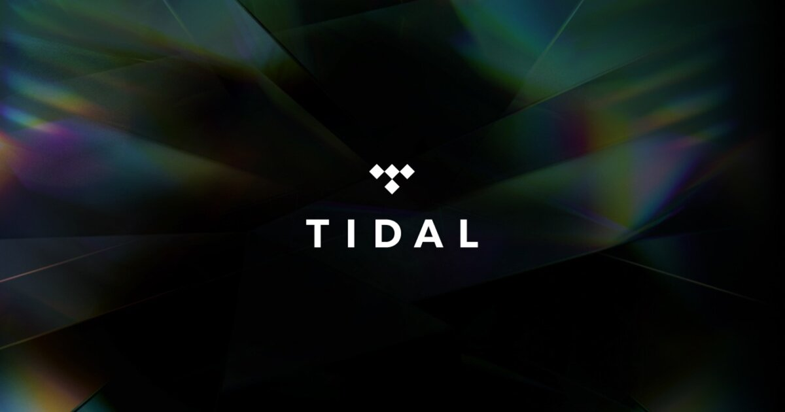

С 9 декабря любой трек, целиком созданный инструментами вроде Suno или Lyria, будет отклонён при загрузке и удалён с платформы. Музыка, где ИИ — лишь помощник (обработка, черновики, отдельные партии), остаётся: запрет касается только тех случаев, когда без нейросети в треке нечего было бы слушать. Объявление сервис опубликовал на своей странице в X и подкрепил обновлённой AI-политикой: «Этого уже недостаточно. Мы считаем нужным более радикальное изменение», — написал Tidal. Дистрибьюторам теперь вообще запрещено поставлять такие записи.
За последние 90 дней Tidal распознал как полностью ИИ-генерированные 43% всех поставляемых треков, а 6 ноября доля превысила 60% суточных поставок. Всего в каталоге помечено около 27 миллионов таких композиций — это 6,3% всей музыки сервиса. Все они исчезнут с платформы до начала 2027 года. При этом, по данным Tidal, 96% ИИ-треков за последние три месяца не набрали ни одного прослушивания: поток генераторного ширпотреба нужен не слушателям, а схемам накрутки роялти.
Отдельная проблема — ИИ-песни, которые копируют имена и стиль живых исполнителей, уводя у них прослушивания и выплаты. Такие треки сервис удалял и раньше: уже убрано более 65 тысяч композиций по подозрению в подражании названиям артистов.
Ещё в конце июня Tidal вёл себя умеренно: ИИ-треки помечались значком и исключались из выплат, но оставались в каталоге. Итог — лавина поставок: зачем дистрибьюторам останавливаться, если запретов нет. Теперь платформа первой из крупных перешла от маркировки к полному запрету и зачистке каталога — посмотрим, подхватят ли ли другие стриминги.